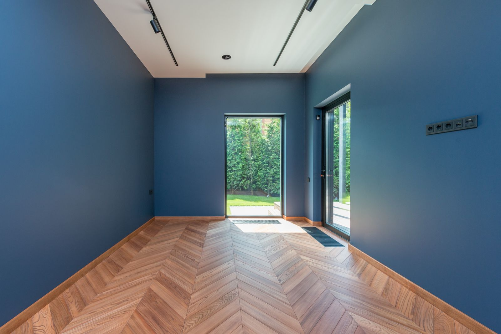
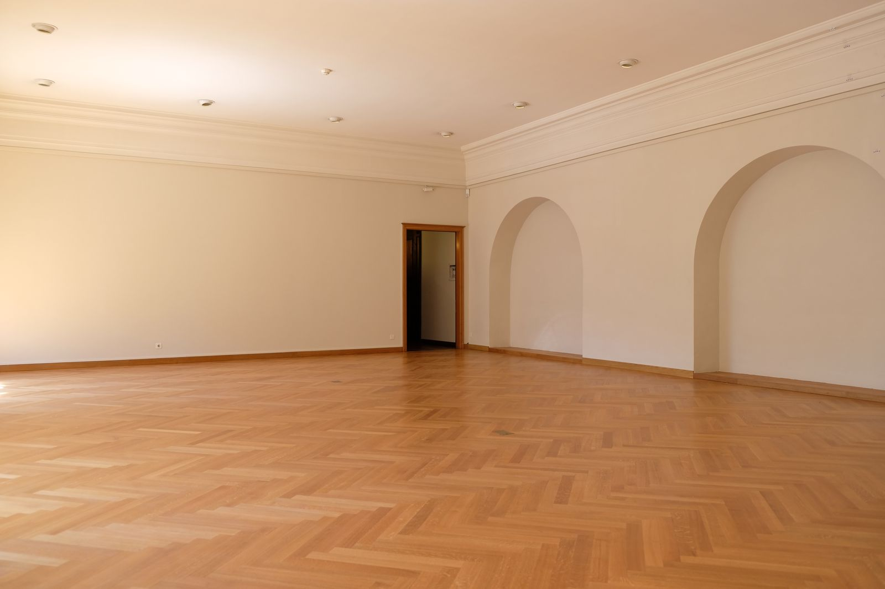
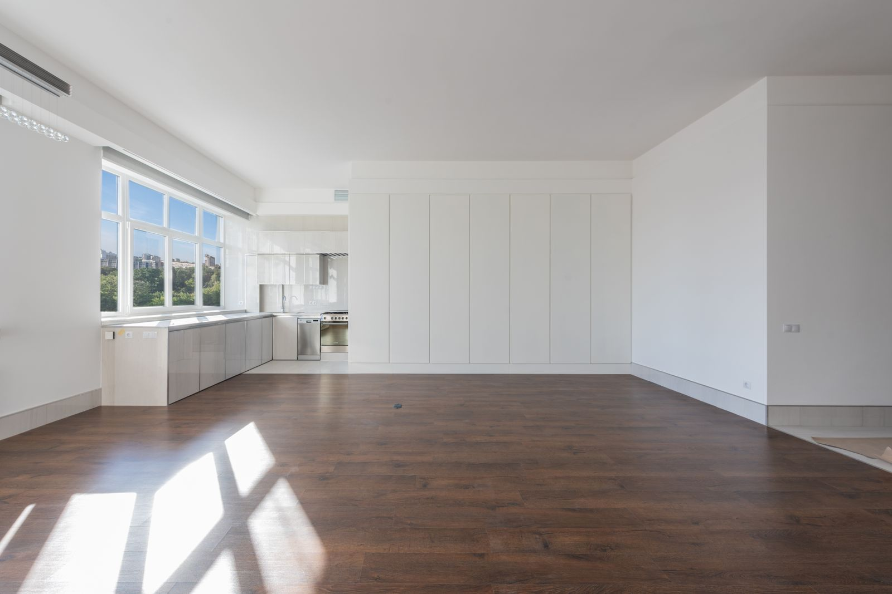
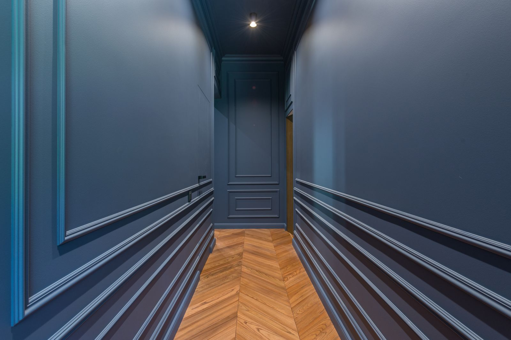
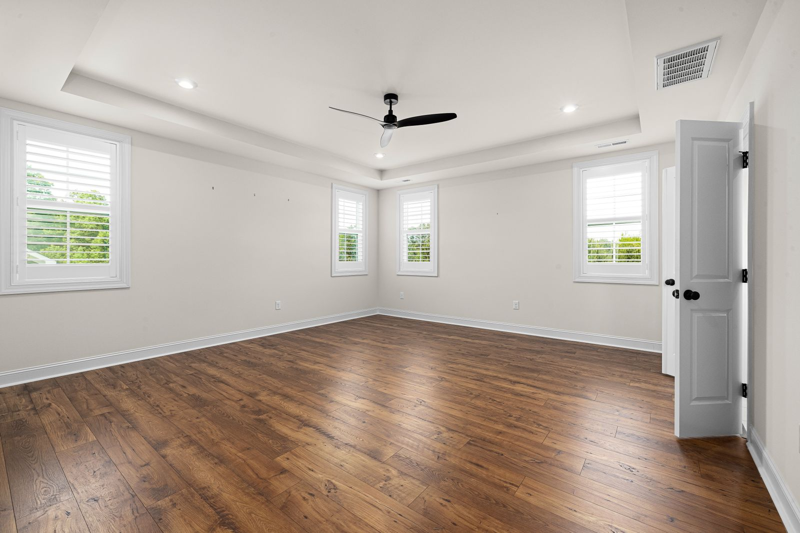
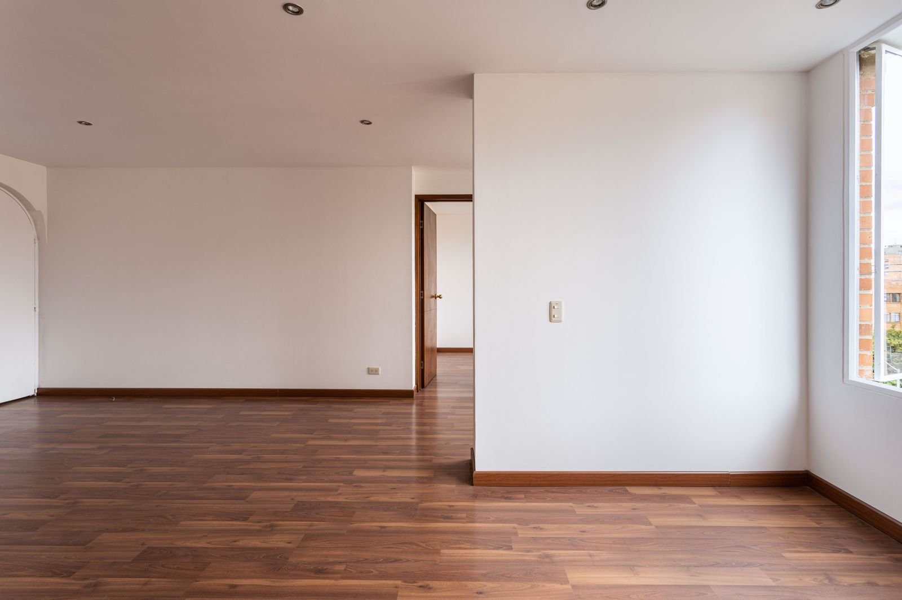
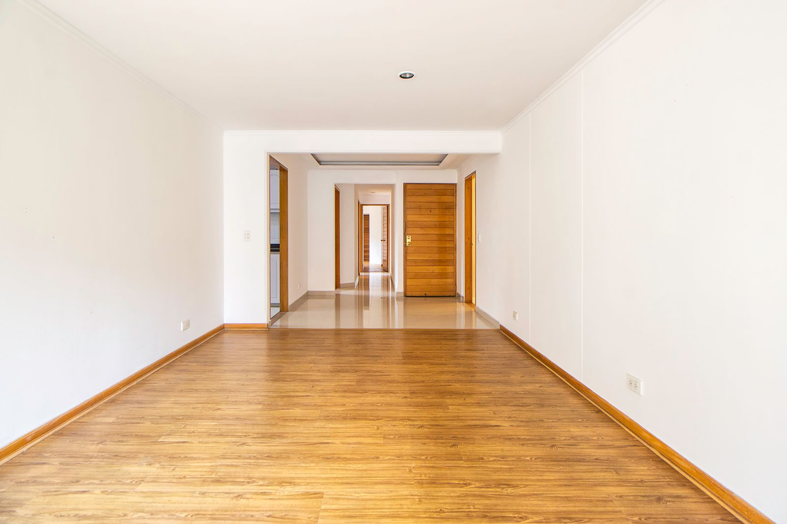

Inspiration
Des sols, des directions, des ambiances
Une sélection d’ambiances, classées par motif et par type de pièce : la légende donne le motif et la teinte que la photographie montre. Chaque pièce calibrée s’ouvre dans le Studio — sur cette photographie même — pour y essayer d’autres parquets.
Ambiances
Voir avant de choisir.
8 ambiances, toutes essayables dans le Studio
À la une

Pièce aux arcades
Bâton rompu blond sous deux arcades : le motif anime sans alourdir. Essayer dans le Studio
Séjour traversant
Deux pièces en enfilade, un seul sol doré qui file vers la lumière. Essayer dans le Studio
Cuisine ouverte
Plateau blanc, lames larges presque noires : tout tient au contraste. Essayer dans le Studio
Couloir en enfilade
Lambris bleu nuit, pointe continue dans l’axe : le couloir s’allonge. Essayer dans le Studio
Chambre claire
Murs blancs, plafond à caisson : la chaleur vient des lames brunes. Essayer dans le Studio
Salon d’angle
Lames étroites tabac, plinthes assorties : une base sobre, prête à meubler. Essayer dans le Studio
Entrée cadrée
Lames miel dans l’axe, portes en enfilade : le regard file au fond. Essayer dans le StudioAucune ambiance ne réunit ces deux critères pour l’instant.
Photographies publiées sur Pexels sous licence Pexels, qui autorise l’usage sur un site. Auteurs et liens sources dans assets/images/CREDITS.md.
Par motif
Choisir par motif
Trois écritures au sol reviennent dans ces ambiances ; chaque fiche détaille rendu, coupes et pièces adaptées.
Lames droites
Une seule direction, des joints décalés : le bois et la lumière parlent. Découvrir ce motifPoint de Hongrie
Coupes d’onglet, pointe continue : un V net qui donne un axe. Découvrir ce motifBâton rompu
Lames à angle droit, décrochés en escalier : graphique, sans coupe d’onglet. Découvrir ce motifVous avez trouvé une ambiance ?
Essayez-la dans votre pièce ou décrivez votre projet.